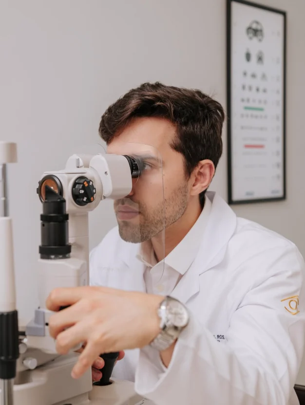
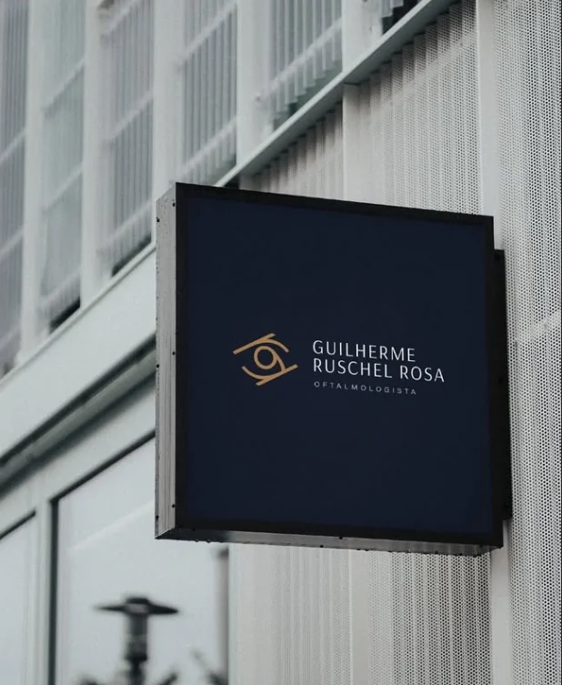
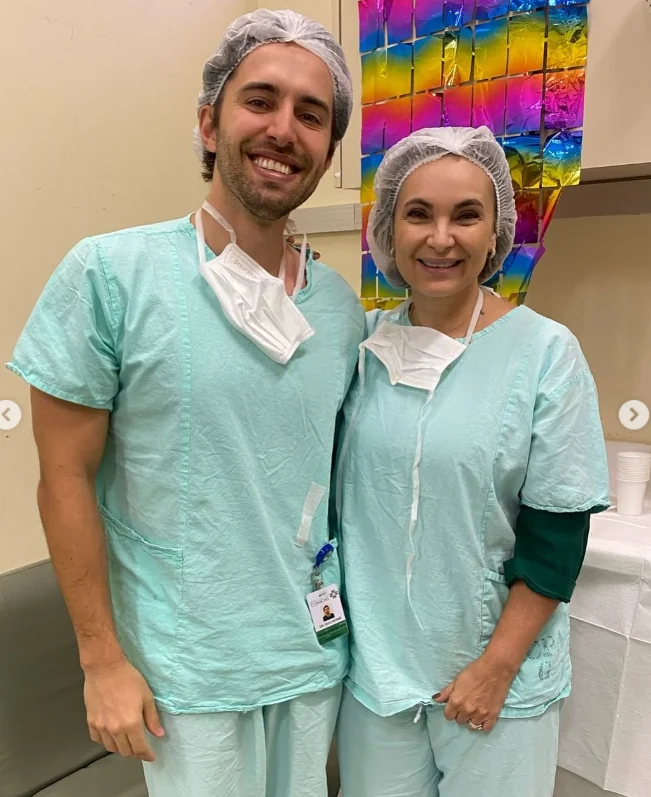

Atenção aos detalhes.
Cuidado com o seu olhar.
Dr. Guilherme Ruschel Rosa. Médico oftalmologista com atuação em catarata, cirurgia refrativa e doenças da córnea, em Novo Hamburgo.
OFTALMOLOGISTA · CRM 47707 / RQE 44364
01 / SOBRE O MÉDICO
A medicina e a ciência a serviço de cada olhar.
O Dr. Guilherme Ruschel Rosa é médico oftalmologista, formado pela Universidade Federal do Rio Grande do Sul (UFRGS), com residência em Oftalmologia no Hospital de Clínicas de Porto Alegre.
Sua trajetória inclui aperfeiçoamento em transplante de córnea no HCPA/UFRGS e título de especialista em Oftalmologia pelo Conselho Brasileiro de Oftalmologia.
02 / ÁREAS DE ATUAÇÃO
Cuidado especializado
para a sua visão.
Conheça as principais áreas de atuação do Dr. Guilherme e saiba quando uma avaliação oftalmológica pode ser importante.
Catarata
A catarata ocorre quando o cristalino perde transparência e pode provocar visão embaçada, maior sensibilidade à luz e dificuldade em atividades cotidianas. A avaliação oftalmológica orienta o diagnóstico e as opções de tratamento.
Cirurgia refrativa
A cirurgia refrativa pode ser considerada para a correção de determinados erros refrativos, como miopia, hipermetropia e astigmatismo. A indicação depende de exames e de uma avaliação criteriosa de cada caso.
Córnea
A córnea é fundamental para a passagem e focalização da luz. A atuação do médico inclui avaliação e procedimentos como transplante de córnea, exérese de pterígio, transplante de limbo e implante de anel intraestromal, conforme indicação.
03 / A CONSULTA
A sua visão merece
uma avaliação cuidadosa.
Cada história e cada necessidade visual são diferentes. A consulta oftalmológica permite investigar sintomas, avaliar a saúde dos olhos e conversar sobre os próximos passos.
Tire suas dúvidasEscuta e compreensão
Um espaço para conversar sobre suas queixas, histórico e necessidades.
Avaliação oftalmológica
Investigação clínica e exames pertinentes, de acordo com cada situação.
Orientação individualizada
Explicação dos achados e discussão das possibilidades de cuidado.
04 / O UNIVERSO DO CONSULTÓRIO
De perto, os detalhes
fazem a diferença.



05 / CONVÊNIOS E ATENDIMENTO
Seu cuidado começa
com o acesso.
Confira os convênios relacionados ao atendimento do Dr. Guilherme no Centro Clínico Regina. A cobertura de consultas e procedimentos deve ser confirmada diretamente no agendamento.
Relação divulgada pelo Centro Clínico Regina.Entre em contato para verificar as condições de atendimento.
06 / DÚVIDAS FREQUENTES
Algumas respostas
antes da sua consulta.
Se precisar de uma orientação específica sobre agendamento, fale diretamente com a equipe.
Como posso agendar uma consulta?
Entre em contato pelo WhatsApp (51) 98028-3131 para consultar a agenda e receber as informações necessárias.
O Dr. Guilherme atende por convênio?
Há uma relação de convênios divulgada pelo Centro Clínico Regina nesta página. Confirme com a equipe se o seu plano e procedimento estão cobertos.
Onde fica o consultório?
O atendimento informado é na Avenida Dr. Maurício Cardoso, 833, sala 205, 2º andar, no Centro Clínico Regina, em Novo Hamburgo, RS.
Quando devo procurar um oftalmologista?
Alterações na visão, desconforto ocular e dúvidas sobre sua saúde visual merecem avaliação. Em caso de perda súbita de visão ou sintomas intensos, procure atendimento de urgência.
Quais são as áreas de atuação?
O Dr. Guilherme atua em oftalmologia, com destaque para catarata, cirurgia refrativa e doenças e cirurgias da córnea.
07 / ONDE ESTAMOS
Estamos em
Novo Hamburgo.
Centro Clínico Regina
Adappta — Oftalmologia
Sala 205 · 2º andar
Novo Hamburgo, Rio Grande do Sul